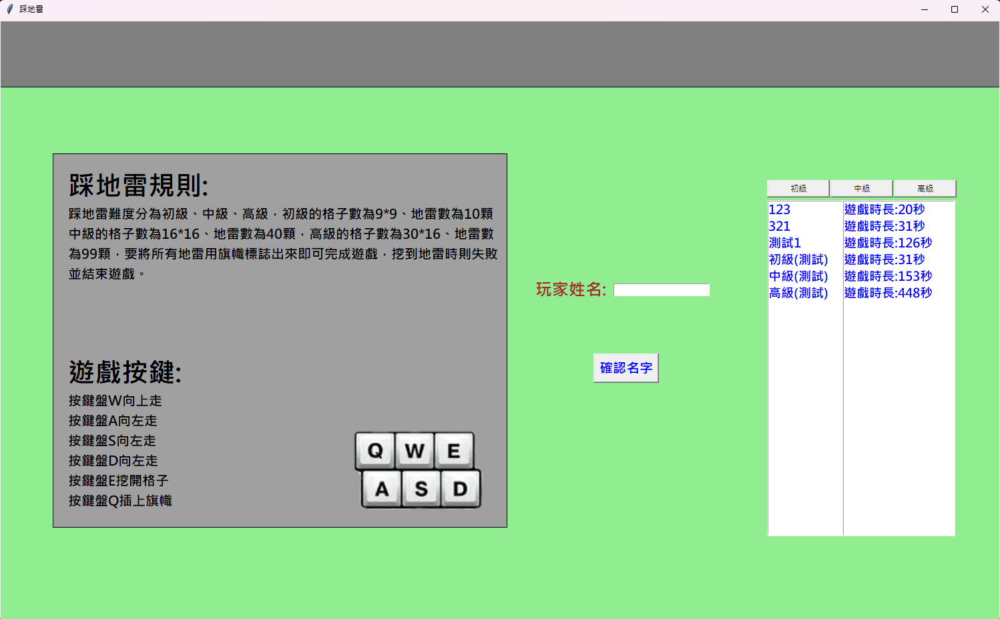

01 / THE SPARKfirst_code.py
01# 最初的一點好奇02print("Hello World")03↳ Hello World
第一次發現，原來想法可以被寫出來。
國中時稍微接觸過程式，對這個領域產生興趣。那時還不知道自己會做什麼，但已經想繼續試試看。
HELLO, WORLD! / ABOUT ME
從一款踩地雷開始，慢慢把好奇心寫成真正能用的東西。
目前就讀雲林科技大學資訊管理系。喜歡動手試、碰到問題就拆開研究，也期待和不同領域的人交流。
01 / MY FILES
點選一個檔案，查看裡面的故事。
國中時稍微接觸過程式，對這個領域產生興趣。那時還不知道自己會做什麼，但已經想繼續試試看。

高二開始學 Python，高三選了遊戲程式設計專題。為了弄懂踩地雷的底層邏輯，我反覆研究、除錯，最後用 Tkinter 做出第一個遊戲。現在回頭看程式還很青澀，卻是最重要的一步。
查看這個作品 ↗現在就讀雲科大資訊管理系，持續透過課堂、社群與自己的專案接觸不同技術。
看看近期作品 ↗02 / EXPLORE MORE
點開卡片，看看經歷與作品。
這個網站是我花一個寒假學習網頁製作的成果，也會隨著新的作品與想法慢慢改變。
閱讀學習紀錄 ↗